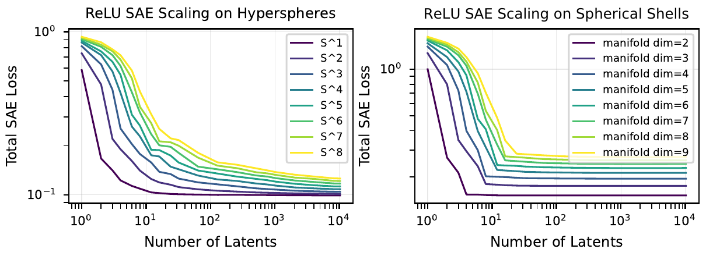

研究问题
如果一个神经网络的激活包含多维特征流形，扩大稀疏自编码器（SAE）的潜变量数，究竟会发现更多不同特征，还是把容量重复用在已知的常见流形上？论文把“重构损失随宽度下降”和“发现特征的数量随宽度增长”区分为两个可检验的量；二者未必同步。（PDF 第 1–4 页，§1–2） 作者借用 Brill (2024) 的容量分配框架，得到两个条件性的渐近区间，再用合成流形和真实模型 SAE 的解码方向作探索性比较。文章自己强调，真实 SAE 是否处在不利区间尚无结论。（PDF 第 4–5 页，§3–4）
背景
SAE 的输入是已有神经网络的激活向量，而非原始文本或图像；编码器给出稀疏的非负潜变量，解码器以这些潜变量的方向线性重构激活。一个潜变量是一条重构方向，不自动等同于数据中的一个语义特征。作者关注的“特征流形”是同一特征内部有多个连续变化方向：例如单位圆上的角度，而不是许多互不相关的离散特征。（PDF 第 1–3 页，§1–2.4） 物理学式的容量分配比喻只说明资源竞争：常见流形上每增加一个潜变量可能继续减小损失，因而稀有特征拿不到潜变量。它不是热力学相变，也没有证明真实网络存在一个独立可数的“真特征”集合。（PDF 第 2–5 页，§2.2、§4）
模型与方法
生成假设为 \(\mathbf{x}=\sum_i\mathbf{S}_i\mathbf{f}_i\)，其中 \(\mathbf{x}\in\mathbb{R}^d\) 是激活，\(\mathbf{S}_i\) 把第 \(i\) 个特征的 \(d_i\) 维坐标 \(\mathbf{f}_i\) 嵌入激活空间，\(p_i=\Pr[\mathbf{f}_i\ne0]\) 是出现率。SAE 先计算 \(\hat{\mathbf f}=\sigma(\mathbf W_e\mathbf x+\mathbf b_e)\)，再计算 \(\hat{\mathbf x}=\mathbf W_d\hat{\mathbf f}+\mathbf b_d\)，以平方重构误差加权稀疏惩罚训练：\(\mathcal L=\|\mathbf x-\hat{\mathbf x}\|_2^2+\lambda S(\hat{\mathbf f})\)。（PDF 第 1–2 页，§2.1） 关键化简同时假设：每个潜变量只响应一个特征；其解码方向留在该特征子空间；不同特征子空间彼此正交；稀疏惩罚可逐潜变量相加。在这些条件下，正交性分解重构误差，特征专一性分解稀疏项，期望目标成为 \(\mathbb E_{\mathbf x}\mathcal L=\sum_i p_i L_i(n_i)\)，约束 \(\sum_i n_i=N\)。这里 \(n_i\) 是分给特征 \(i\) 的潜变量数，\(L_i\) 是该特征在给定容量下的最优单特征损失，\(N\) 是 SAE 总宽度。（PDF 第 2 页，§2.2；第 9 页，附录 B.1，式 (1)） 理论区间另设 \(p_i\propto i^{-(1+\alpha)}\)（按频率排序）和相同的单特征幂律 \(L_i(n)\propto n^{-\beta}\)，其中 \(\alpha,\beta>0\)。连续松弛的最优分配满足 \(n_i\propto p_i^{1/(1+\beta)}\propto i^{-\gamma}\)，\(\gamma=(1+\alpha)/(1+\beta)\)；以 \(n_{i_c}\approx1\) 截断尾部，并定义发现数 \(D(N)=|\{i:n_i>0\}|\)。这是假设性最优分配，不是 SGD 训练必然达到的解。（PDF 第 3–4 页，§2.5；第 10 页，附录 B.2，式 (2)） 数值部分还设一个异质例子：频率指数取 \(\alpha=0.5\)，仅最常见特征有幂律损失，其余是离散特征；合成几何实验训练 ReLU SAE，比较单位超球面和半径在 \(0.5<|\mathbf{x}|<2\) 的球壳。附录 \(C\) 给出 12,000 步、批量 2,048、Adam 学习率 \(10^{-3}\)；图 3 的 ReLU 稀疏系数为 \(\lambda=0.1\)。（PDF 第 3–4 页，图 2–3；第 11 页，附录 \(C\)）
核心结果与证据
理论推导：当 \(\alpha<\beta\) 时，频率尾部分布控制结果，\(D(N)\propto N\)，\(\mathcal L(N)\propto N^{-\alpha}\)；当 \(\beta<\alpha\) 时，常见流形的损失衰减更慢，\(D(N)\propto N^{(1+\beta)/(1+\alpha)}\)，\(\mathcal L(N)\propto N^{-\beta}\)，故 \(D(N)/N\to0\)。阈值来自最优分配尾和的收敛性；等号边界未在文中作为这两个幂律之一给出。此为模型条件下的渐近预测，非真实 SAE 的普适定律。（PDF 第 4 页，§2.5；第 10 页，附录 B.3–B.4，式 (3)–(5)） 图 1 的单位圆实验显示：从 4 到 8 再到 24 个潜变量，解码方向沿圆更密集，激活弧段变窄，重构图形和总损失有小幅改善。这是“用宽度铺贴同一流形”的机制示例，不能据此断定新增潜变量在真实数据中没有独立语义。（PDF 第 2 页，图 1） 图 2 右侧是作者的容量分配数值模拟，而非训练好的 SAE；在 \(\beta\ll\alpha\) 的选定参数下，\(N=10^8\) 个潜变量只对应约 \(3\times10^6\) 个被发现特征。它说明一个常见幂律流形足以在该模型中吸收容量，不能外推为真实模型计数。（PDF 第 3–4 页，图 2、§2.6） 几何反例同样重要：图 3 左侧的空心单位超球面可随宽度继续缓慢降损；右侧加入半径变化的球壳后，ReLU SAE 的曲线较早进入平台。附录 A.1 将平台位置概括为约 \(n_i\approx2d_i\)，解释为正负方向各用一个非负潜变量形成基；这是作者对合成实验的解释，而非证明。图 6 的 JumpReLU 实验呈相似对比。（PDF 第 4 页，图 3；第 8 页，附录 A.1；第 11 页，图 6） 真实模型探针只提供弱证据：Gemma Scope 第 12 层解码方向的最近邻余弦相似度总体没有大比例极高值；少量 \(>0.97\) 的邻居在所查的一个 SAE 中是死潜变量。Inception-\(v_{1}\) 实验出现较多高相似方向，但作者指出 \(L_{1}\) 目标也可能容许重复潜变量。因此相似方向不能单独确证流形铺贴。（PDF 第 11–13 页，附录 E、图 7–8）
Figure 1 · 图 1：ReLU/\(L_{1}\) SAE 对单位圆的重构。随着潜变量从 4 增至 8、24，彩色激活弧段更窄、方向更密，损失略降；只显示合成圆上的容量铺贴，不证明真实网络稀有特征受损。来源：Michaud、Gorton、McGrath，arXiv:2509.02565v2，CC BY 4.0。
物理解读：One manifold can use additional latents to reduce its loss without adding a distinct feature.
来源：PDF physical \(p\).2, Fig.1; exact author source: figures/manifold-spoke-scaling.pdf in arXiv \(v_{2}\) TeX package

Figure 3 · 图 3：ReLU/\(L_{1}\) SAE、稀疏系数 0.1。左侧单位超球面（不同维度）可持续小幅降损，右侧半径介于 0.5 与 2 的球壳很快进入平台；横轴为潜变量数、纵轴为总 SAE 损失。这种几何依赖限制了把空心流形的铺贴外推到真实表征。来源：Michaud、Gorton、McGrath，arXiv:2509.02565v2，CC BY 4.0。
物理解读：Radial variation can eliminate the long power-law-like single-manifold tail seen on hollow spheres in this synthetic setup.
来源：PDF physical \(p\).4, Fig.3; exact author source: figures/relu-scaling-toymanifolds-both.pdf in arXiv \(v_{2}\) TeX package
有效性与局限
正交特征子空间、特征专一潜变量、相同的 \(L_i(n)\) 幂律和最优分配是解析结果的前提；真实网络的特征可能重叠，潜变量会吸收或组合特征，训练也可能停在不同解。把 \(n_i=0\) 纳入 \(n^{-\beta}\) 模型需要另设未发现特征的有限损失；论文用 \(n_{i_c}\approx1\) 作截断而未给出完整的零容量函数。（PDF 第 2–4 页，§2.2–2.5；第 9–10 页，附录 B） 作者没有测得真实特征的频率指数 \(\alpha\) 或真实流形单特征损失指数 \(\beta\)，因此没有确定现实 SAE 在哪一侧。附录 A.1 从 Gemma Scope 潜变量频率斜率 \(-0.57\) 至 \(-0.74\) 推测 \(\alpha\approx0.5\) 至 \(0.7\)，但这与文中 \(p_i\propto i^{-(1+\alpha)}\) 的指数定义按字面不一致；本卡不采用该数值推断。潜变量频率本身也不等同于真实特征频率。（PDF 第 7–8 页，附录 A.1、图 4；第 10 页，附录 B.2） 半径变化使 toy SAE 早早饱和，是对病态区间可能性的重要限制；但两类几何是否代表真实神经表征仍未确证。解码余弦统计也无法排除重复、死潜变量或其他训练效应。（PDF 第 4–5 页，§3–4；第 8、11–13 页，附录 A.1、E）
复现与资源
公开且逐版可核的材料是 arXiv \(v_{2}\) PDF 与对应 TeX 源包；本卡的图 1、图 3 均取自源包中作者插入的图文件。论文说明合成实验的优化步数、批量、学习率、损失系数和几何范围，但未在文中提供可核实的本研究代码仓库、合成数据生成脚本、检查点或完整随机种子；因而这些实验不能凭文字直接逐项复现。（PDF 第 3–4、11 页，图 3、附录 \(C\)） 附录 E 使用 Gemma Scope 的现有 SAE 并训练 Inception-\(v_{1}\) mixed3b 的 ReLU/\(L_{1}\) SAE；后者给出 \(\lambda=1\)、学习率 \(10^{-4}\)、扩展比 16 和总宽度 7,680。文中未附最近邻统计脚本或足够的全流程数据说明。full-text verified; no independent reproduction performed。（PDF 第 11–12 页，附录 E）
阅读指南
先看 PDF 第 2 页图 1，把“一个连续特征流形被多个 SAE 潜变量铺贴”与“多个不同特征被发现”分开；再读 §2.2 的分解假设和第 9 页式 (1)，明确为什么能谈容量分配。 接着看第 10 页附录 B.2–B.4 的式 (2)–(5)，核对 \(\alpha\) 与 \(\beta\) 控制的两个渐近区间；最后并排看第 4 页图 3 的空心超球面与有半径变化的球壳。真实模型探针与未知指数留到附录 A.1、E 阅读；不要把图 7–8 的相似度当作机制证明。
← 上一篇 Dynamical Learning in Deep Asymmetric Recurrent Neural Networks 下一篇 → Detecting and Characterizing Planning in Language Models

Discussion
评论与讨论
评论公开保存在 GitHub Discussions；阅读无需登录，发表评论需要 GitHub 账号。